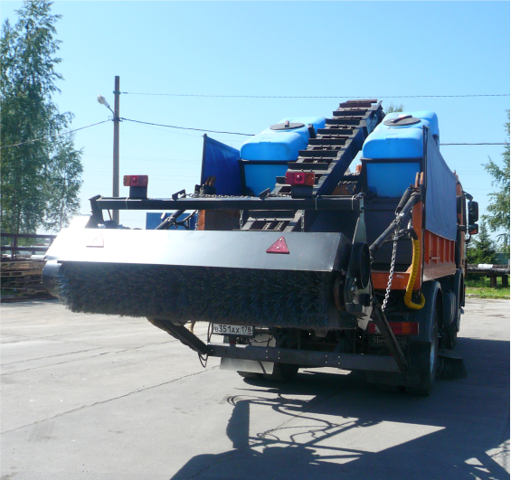
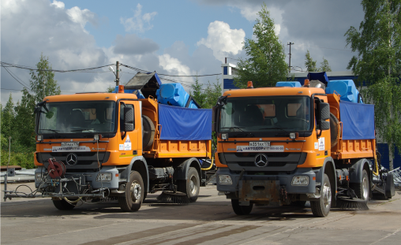

Подметально-уборочное оборудование ОПУС
Инженеры нашего предприятия разработали и наладили производство подметально-уборочного оборудования, которое сохранило достоинства хорошо известных машин типа БРОДВЕЙ, ПУМ и вакуумно-подметальных машин типа МВП, но при этом лишилось присущих этим машинам недостатков.
Нам удалось создать оборудование с производительностью и универсальностью - как у машин типа БРОДВЕЙ; компактное, неприхотливое, имеющее приемлемую цену - как у ПУМ; эффективное пылеподавление - как у вакуумных МВП. Более того, оборудование может работать круглогодично в любых погодных условиях.
Для достижения высокой производительности наши инженеры применили усиленную коробку отбора мощности, современную гидравлику и конструкторские решения, снижающие непроизводительные потери мощности.
Для увеличения объема вывозимого смёта был установлен специальный съемный задний борт.
В отличие от прицепного оборудования, имеющего чрезмерную длину, нуждающегося в дополнительном автономном двигателе и требующего оператора с водительской категорией "Е", наше оборудование является съемным и размещается на кузове самосвала. Его универсальность состоит в том, что оно может быть быстро установлено на большинство самосвальных комбинированных дорожных машин.
Лидером по низкой цене, компактности и простоте устройства является машина типа ПУМ. Она имеет минимальный вылет рабочего органа, простоту в обслуживании, не требует от оператора водительских прав категории "Е", не обременена расходами на обслуживание второго двигателя, поскольку для оборудования используется привод от двигателя грузовика.
Мы применили компоновку машины аналогичную ПУМ с использованием современных высококачественных узлов, материалов и конструкторских решений. Это позволило при разумной цене обеспечить всесезонность, компактность и неприхотливость оборудования ОПУС.
Нам удалось создать оборудование с производительностью и универсальностью - как у машин типа БРОДВЕЙ; компактное, неприхотливое, имеющее приемлемую цену - как у ПУМ; эффективное пылеподавление - как у вакуумных МВП. Более того, оборудование может работать круглогодично в любых погодных условиях.
Для достижения высокой производительности наши инженеры применили усиленную коробку отбора мощности, современную гидравлику и конструкторские решения, снижающие непроизводительные потери мощности.
Для увеличения объема вывозимого смёта был установлен специальный съемный задний борт.
В отличие от прицепного оборудования, имеющего чрезмерную длину, нуждающегося в дополнительном автономном двигателе и требующего оператора с водительской категорией "Е", наше оборудование является съемным и размещается на кузове самосвала. Его универсальность состоит в том, что оно может быть быстро установлено на большинство самосвальных комбинированных дорожных машин.
Лидером по низкой цене, компактности и простоте устройства является машина типа ПУМ. Она имеет минимальный вылет рабочего органа, простоту в обслуживании, не требует от оператора водительских прав категории "Е", не обременена расходами на обслуживание второго двигателя, поскольку для оборудования используется привод от двигателя грузовика.
Мы применили компоновку машины аналогичную ПУМ с использованием современных высококачественных узлов, материалов и конструкторских решений. Это позволило при разумной цене обеспечить всесезонность, компактность и неприхотливость оборудования ОПУС.
Для эффективного пылеподавления при круглогодичной эксплуатации оборудования была разработана система экранов и фартуков блокирующих пыль внутри контура рабочего органа. Дополнительно мы применили в системе пылеподавления высоконапорный водяной насос. Использование высокого напора позволило в несколько раз снизить расход воды (за счет её высокого давления), повысив при этом эффективность (энергию) пылеподавления и обеспечить качественное пылеподавление в течение длительного периода непрерывной (в течение дня) работы. Использование специального водяного насоса, который также может работать зимой (с использованием солевых растворов) позволило обеспечить круглогодичную работу оборудования с эффективным подавлением пыли.
В зимний период на цилиндрической щетке рабочего органа мы предлагаем использовать пучковые щеточные диски. Это предотвращает налипание снега и образование на поверхности щетки корки льда. Оборудование имеет встроенные баки для воды 1,6 м куб. и водяной пистолет с инерционной катушкой, что позволяет расширить сферу применения оборудования. Например, мыть объекты улично-дорожной сети или очищать машину и оборудование после рабочей смены.
Для повышения надежности оборудования был разработан пакет специальных мер, таких как система контроля рабочих параметров оборудования, отсекатель гидравлического масла (при обрывах РВД), устройство коррекции температуры гидравлического масла (подогрев или охлаждение), видеоконтроль и подсветка рабочих зон, современный пульт управления.
Оборудование Подметальное Уборочное Съемное (ОПУС) вобрало в себя лучшие мировые достижения дорожного машиностроение сохранив доступную цену, простоту управления и обслуживания. Оборудование ОПУС универсально, приспособлено для эффективной круглогодичной работы и имеет богатое оснащение. ОПУС являет собой достойную альтернативу машинам типа БРОДВЕЙ и вакуумно-подметальным машинам МВП.
В зимний период на цилиндрической щетке рабочего органа мы предлагаем использовать пучковые щеточные диски. Это предотвращает налипание снега и образование на поверхности щетки корки льда. Оборудование имеет встроенные баки для воды 1,6 м куб. и водяной пистолет с инерционной катушкой, что позволяет расширить сферу применения оборудования. Например, мыть объекты улично-дорожной сети или очищать машину и оборудование после рабочей смены.
Для повышения надежности оборудования был разработан пакет специальных мер, таких как система контроля рабочих параметров оборудования, отсекатель гидравлического масла (при обрывах РВД), устройство коррекции температуры гидравлического масла (подогрев или охлаждение), видеоконтроль и подсветка рабочих зон, современный пульт управления.
Оборудование Подметальное Уборочное Съемное (ОПУС) вобрало в себя лучшие мировые достижения дорожного машиностроение сохранив доступную цену, простоту управления и обслуживания. Оборудование ОПУС универсально, приспособлено для эффективной круглогодичной работы и имеет богатое оснащение. ОПУС являет собой достойную альтернативу машинам типа БРОДВЕЙ и вакуумно-подметальным машинам МВП.

